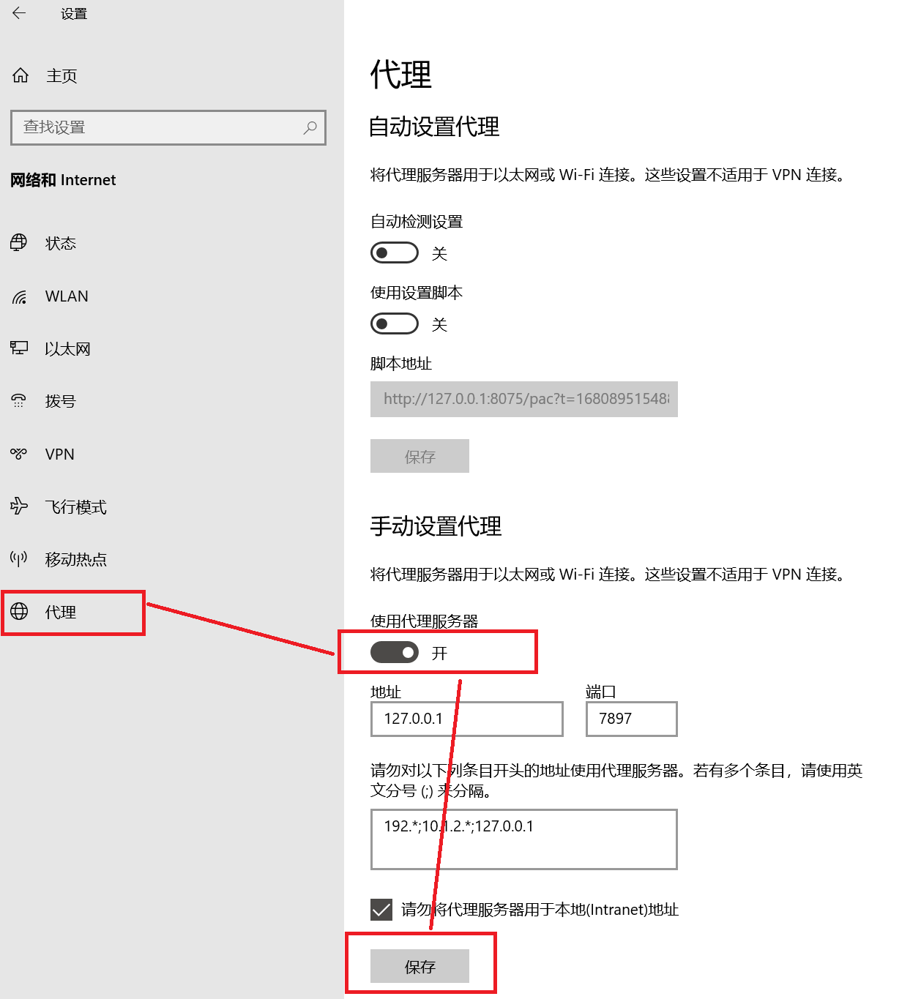
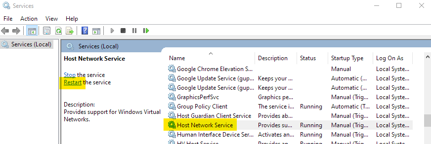
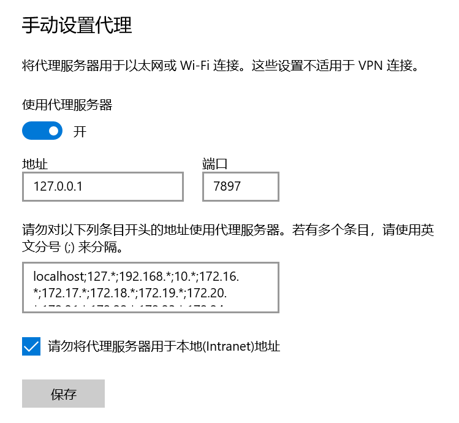
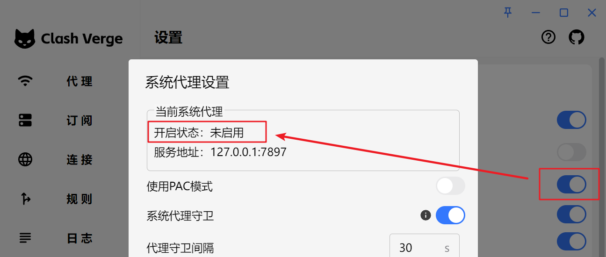
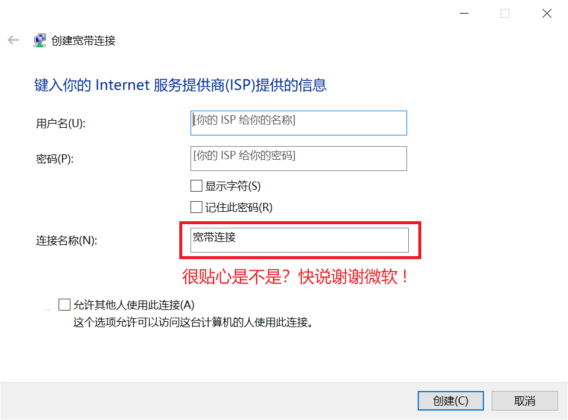

Windows
代理菜单空白¶
问题原因
- 内核通信失败
解决方案
- 打开 Windows 防火墙设置，全部关闭，再开启
打开TUN模式后网络异常¶
问题原因
- 系统中可能有多个网卡 / 网段与配置中的规则冲突
解决方案
- 打开网络设置，删除多余网卡，参见Issue#2400
此应用无法在你的电脑上运行¶
99.99% 是因为你下载错了文件，请检查你是否下载了对应你机器架构的安装包。
对于大部分人来说，应该下载 x64 版本，而不是 arm64 版本。
无法启动/不显示界面/闪退/只有托盘图标¶
问题原因
- Tauri 框架依赖于
WebView2。如果卸载或禁用了WebView2,将无法显示界面。具体表现为: 程序可以启动，但是点击托盘菜单没有反应。
解决方案
- 如果是利用第三方软件禁用了
Edge，请检查是否同时禁用了WebView2，将WebView2取消禁用。 - 如果是卸载了
WebView2，可以下载 WebView2 安装包，重新安装 WebView2。 - 如果是已安装
WebView2但仍无法打开面板，请尝试在 Release 下载内置了WebView2的版本（带有fixed_webview2字样的安装包）。
闪退¶
问题原因
- 安装有360、金山毒霸等杀毒软件拦截服务模式安装。
解决方案
- 不要使用中国的杀毒软件。
WebView2 无法正常安装¶
问题原因
- 可能是你的 Windows 系统关闭了自动更新。
解决方案
-
打开自动更新。
-
若实在无法安装 WebView2，可以尝试在 Release 下载内置了
WebView2的版本（带有fixed_webview2字样的安装包）。
Windows 7 无法使用¶
- 已不再支持
Windows7
静默启动失效¶
配置了静默启动，依然弹出程序窗口。
- 如果出现任务管理器中有两个启动项，或者开机启动时静默启动失效。请用管理员权限启动软件后开关一次开机启动设置，即可删除多余的启动项。
- 如果平时一直是使用管理员权限运行的软件，那就用普通用户权限运行软件后开关一次开机启动设置，删除多余启动项后，后续不会再出现这个问题。
自启动失效¶
- 原因：每次安装的时候会把之前的(旧的)启动项清除掉。
- 办法：重新再开关一次开机启动的开关就行了。
这样设计的理由：
1.老版本的应用名称和最新版有点区别（老版本叫clash verge，新版本多一个dash: clash-verge）如果不清理启动项，就会导致某些报错。
2.有些用户安装路径混乱，会产生启动多个进程的情况，导致程序异常
不打开 Clash 无法使用网络¶
不使用 Clash 就无法访问网络，打开 Clash 后才能正常访问网络。
- 可能原因: 由于未知原因（如断电、蓝屏或其他原因），系统代理未能正确地被关闭（即使 Clash 已退出），但实际上 Windows 的系统代理设置开关仍然开着。
- 解决办法: 打开
Windows 设置->网络和 Internet->代理->手动设置代理，关闭使用代理服务器。

无法选中订阅¶
日志报错: An attempt was made to access a socket in a way forbidden by its access permissions.
系统服务没有开启，执行下列命令开启服务。
或者手动打开服务设置，重新启动 Host Network Service。

应用内更新后自动安装到了 C 盘默认目录/应用内更新后仍然是旧版本¶
问题原因
- 之前的某些版本升级有 Break Change，如果从很旧的版本升级会导致无法识别已安装目录。
解决方案
- 手动卸载系统中存在的多个 Clash Verge Rev，然后重新安装最新版本，后续更新不会出现此类问题。
Windows 系统 UWP 应用(如微软商店等)无法使用代理¶
问题原因
- Windows 系统 UWP 应用存在沙盒机制，正常情况下无法访问 localhost（即无法访问回环地址），而代理程序在本地端口监听请求。因此需要解除 UWP 应用的回环访问限制。
解决方案
- 打开
Clash 设置->UWP 工具，找到需要解除限制的 UWP 程序。 - 勾选需要解除限制的 UWP 程序后，点击工具顶部的
Save Changes按钮保存修改。
修改PowerShell脚本变量的主机地址¶
问题描述
- 此前PWSH脚本变量的地址固定为
127.0.0.1，不便在其它主机上使用(如WSL)。
解决方案
- 打开
Windows环境变量->新建用户变量CLASH_VERGE_REV_IP，值填写为你想要的IP地址。重新启动CVR后复制PWSH变量即可生效。
Windows 宽带拨号无法使用系统代理（2.0 版以后无此问题）¶
Windows 的
Windows 设置->网络和 Internet->代理中显示系统代理已经开启，且指向了正确的端口。Clash Verge Rev 的设置->系统代理小齿轮界面中，当前系统代理的开启状态却显示为未启用。
 |
 |
|---|---|
解决办法
- 下载安装最新版本。或：
- 打开注册表
HKEY_CURRENT_USER\Software\Microsoft\Windows\CurrentVersion\Internet Settings\Connections删除乱码名称的条目(引用博客)。 - 删除原有的宽带拨号设置，然后重新创建宽带拨号设置（连接名称不要使用中文）。

版本更新后图标没有变化/老版图标/图标白色方块¶
-
问题原因: Windows 需要更新图标缓存文件，并重启资源管理器。
-
解决办法: 点击按钮复制下列代码，
Win + R输入cmd确定，右键粘贴命令并执行。或手动删除用户目录下的该文件，并重启资源管理器。
del /A "%userprofile%\AppData\Local\IconCache.db" 2>nul & taskkill /f /im explorer.exe & start explorer.exe
找不到 VCRUNTIMEXXX.dll，无法继续执行代码（2.0版本后安装器会自动检测并安装vc runtime）¶
- 问题原因：操作系统缺少 VC 运行环境所需的库。
- 解决方案：下载并安装 VC 运行库。
| 运行库 | 下载地址 |
|---|---|
vc_redist.x64.exe |
vc_redist.x64.exe |
| 运行库 | 下载地址 |
|---|---|
vc_redist.x86.exe |
vc_redist.x86.exe |
| 运行库 | 下载地址 |
|---|---|
vc_redist.arm64.exe |
vc_redist.arm64.exe |
Windows 系统开启代理后无法使用 Phone Link 连接手机¶
http 系统代理用户¶
点击系统代理旁的设置按钮，在当前绕过后添加 ;dcg.microsoft.com
虚拟网卡用户¶
在规则中添加 dcg.microsoft.com 直连规则
验证进程异常退出，退出码: -1073741819¶
服务内核未通过安全检查，已切换到普通模式（Sidecar）¶
为什么会出现¶
服务模式会以系统权限启动内核。如果普通账户也能修改内核文件，或替换安装目录及其上级目录里的文件，其他程序就可能借此获得系统权限。因此，服务会检查内核文件和各级目录的所有者与访问权限，不符合要求时拒绝启动。
出现此提示后，应用已切换到普通模式（Sidecar）；以普通用户权限运行时无法使用 TUN。可以选择以下管理员运行方式，或修复权限后恢复服务模式。
不想或不会修复：以管理员身份运行¶
可以不安装服务，直接以管理员身份运行 Clash Verge Rev。 这种方式也可以使用 TUN，适合暂时不想修复或不熟悉权限设置的用户。
- 在托盘图标菜单中退出 Clash Verge Rev，确保已完全退出，而不只是关闭窗口。
- 右键单击 Clash Verge Rev 快捷方式或
clash-verge.exe，选择「以管理员身份运行」，在 Windows 授权提示中允许。 - 无需安装服务；若出现服务安装或修复提示，选择「继续使用 Sidecar」。进入应用后，按需重新开启 TUN。
以后使用此方式时，也需要以管理员身份启动软件。管理员运行不会修复原来的目录权限；如果日后希望使用服务模式，再按下文处理。
修复权限并恢复服务模式¶
弹窗显示的是简化后的中文说明，不会直接显示 core path 等技术信息。以下提到的英文报错和具体路径，需要先右键单击弹窗通知，复制原始报错后查看。
- 复制并查看具体路径。 在应用内右键单击这条通知，然后打开记事本，按
Ctrl+V粘贴。通知会保留到手动关闭。在粘贴出的原始报错中，找到core path，它后面的路径就是未通过检查的文件或目录；verge-mihomo.exe和verge-mihomo-alpha.exe可能因为同一个上级目录而同时被拒绝。 - 如果安装在下载目录、桌面、用户目录或自行解压的目录中： 先在「设置 → Verge 高级设置 → 备份设置」中备份配置，退出应用，再使用官方安装包安装到默认的
C:\Program Files\Clash Verge目录。避免给普通账户授予该目录的「修改」或「完全控制」权限，也不要把旧目录的自定义权限复制过去。 - 如果已经安装在默认目录，或重新安装后仍提示： 根据第 1 步复制出的路径，在资源管理器中找到对应的文件或文件夹，右键单击它，打开「属性 → 安全 → 高级」，检查所有者和权限条目。内核文件及各级目录的所有者应为
SYSTEM、Administrators或TrustedInstaller。普通账户不应具有修改内核、替换目录、删除目录内文件或更改权限的权限。若权限来自继承，应检查对应的上级目录；不熟悉 Windows 权限设置时，请让系统管理员协助恢复该路径的正常权限。 - 修复后恢复服务模式。 启动新安装位置中的 Clash Verge Rev，在「设置 → 服务模式」重新安装服务，按提示允许管理员授权；必要时先卸载服务再安装。确认首页显示「服务模式」，再重新开启 TUN。
复制出的原始报错指向 C: 时¶
如果第 1 步粘贴出的内容包含 core path "\\\\?\\C:\\"，例如 verge-mihomo.exe: core path "\\\\?\\C:\\" has an untrusted write ACE: ace_index=5, sid=S-1-5-11, ...（旧版本为 core path "\\\\?\\C:\\" is writable by an account other than SYSTEM, Administrators or TrustedInstaller），表示检查未通过的位置是 C 盘根目录，不代表应用一定安装在根目录。报错中的反斜杠经过转义，实际路径为 \\?\C:\，其中 \\?\ 是 Windows 路径前缀。
报错中的 sid 是触发拦截的权限条目所属的用户或组：S-1-5-11 为 Authenticated Users，S-1-5-32-545 为 Users，S-1-1-0 为 Everyone，以 S-1-5-21- 开头的是本机或域中的某个用户或组。
如果报错同时包含 dangerous=0x00010000（只涉及「删除」），通常是根目录本身带有「修改」权限。新版服务不再因卷根目录的「删除」权限拦截：先更新 Clash Verge Rev，在「设置 → 服务模式」重新安装服务，无需为这条报错修改根目录权限；若仍被拒绝，按新的原始报错继续检查。
服务会一直检查到磁盘根目录，因此只修改安装文件夹，或反复重装服务，可能无法解决。请让系统管理员在「此电脑 → 本地磁盘 (C:) → 属性 → 安全 → 高级」找到该用户或组的权限条目，检查作用于根目录本身（「应用于」为「只有该文件夹」或以「此文件夹」开头）的条目是否允许删除子文件夹及文件、更改权限、取得所有权或完全控制，并结合系统原有设置修复。Windows 默认只允许 Authenticated Users 在根目录本身创建文件夹，其「修改」权限仅应用于「仅子文件夹和文件」。
Warning
不要对整个 C 盘递归执行权限重置、接管所有权或删除用户组权限。不要勾选「使用可从此对象继承的权限项目替换所有子对象的权限项目」。这些操作可能破坏 Windows 和其他应用的权限。普通账户正常的读取权限，以及仅允许在根目录创建文件夹的权限，不必一并删除。
仍然无法恢复¶
如果复制出的原始报错提到所有者（is owned by）、无法读取权限或其他安全检查原因，请保留完整内容，不要一律按「普通账户可写」处理。提供报错路径、安装位置和导出的日志，便于进一步排查。